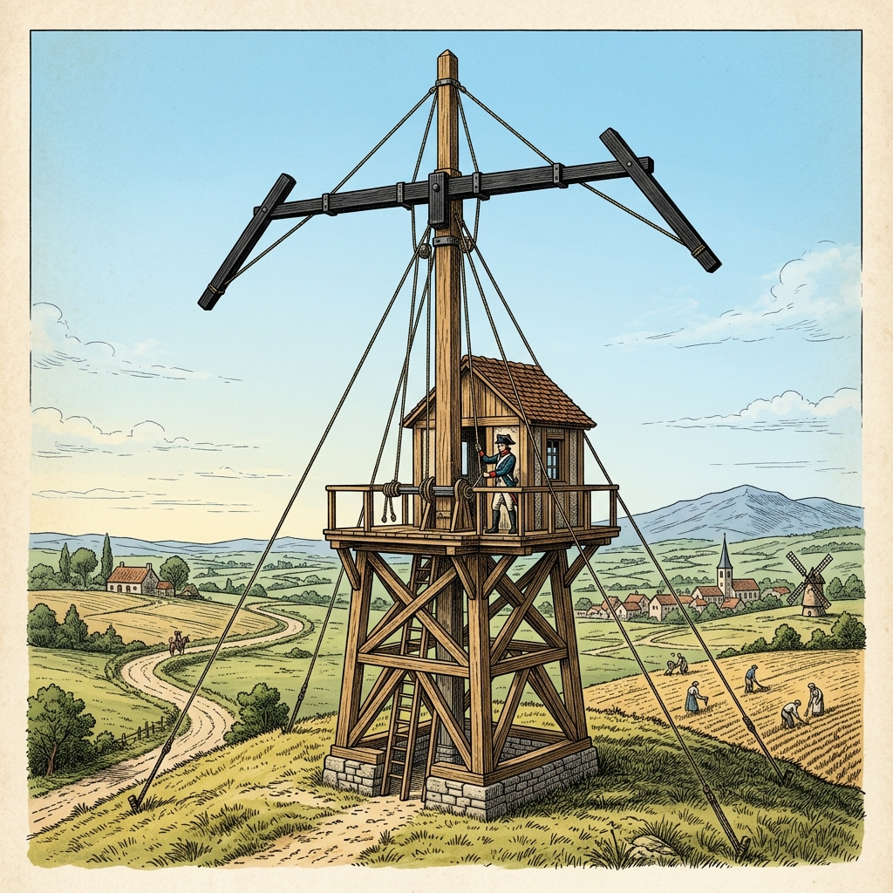

¿Qué hacíamos antes nosotros que ahora hace la máquina?
Trasciende la simple manipulación de herramientas.
Fomentar la curiosidad y la indagación constante frente al mundo artificial.
Materia, Energía e Información.

Ej: Telégrafo óptico (Chappe, 1792)
Abrir la "caja negra". Análisis de sistemas.
Resolución de problemas y diseño de proyectos.
La tecnología forma redes y sistemas.
Debates sobre consumismo y riesgo socioambiental.
"¿Estamos preparando a nuestros alumnos solo para usar tecnología, o para cuestionarla y diseñarla?"